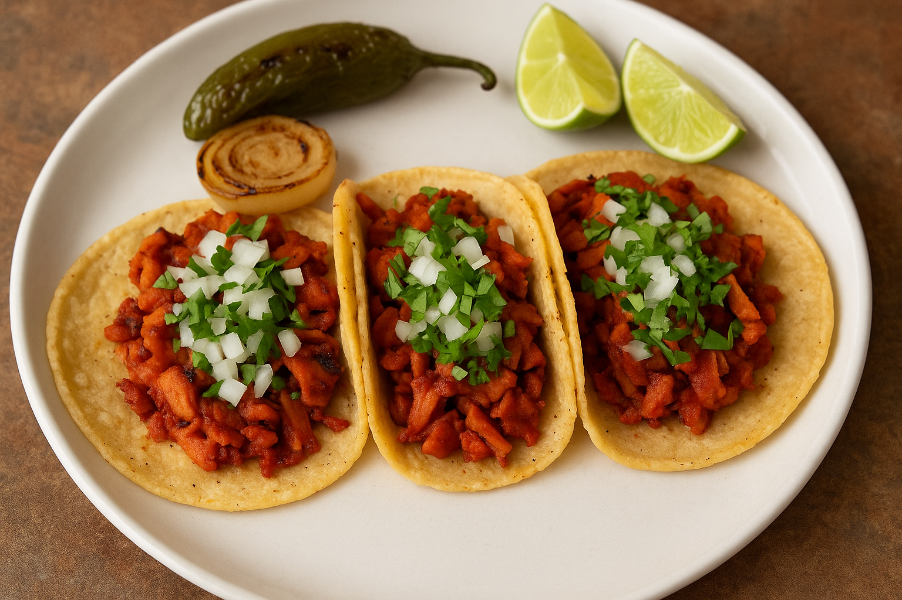

Tacos al Pastor
>
Description
Bold, smoky, sweet, and savory — Tacos al Pastor are a true Mexican street food classic. Inspired by Lebanese shawarma and adapted with traditional Mexican flavors, these tacos are made with marinated pork, grilled to perfection, and served with pineapple, onions, and cilantro.
While traditionally made on a vertical spit, this home-friendly version lets you recreate the magic using a slow cooker or grill. It's perfect for weekend gatherings, family dinners, or any time you crave a taste of Mexico.
Ingredients
- 3 lbs pork shoulder, sliced thin
- 4 pineapple spears (fresh or canned)
- 6 dried guajillo chiles, stemmed and seeded
- 1 dried chile de árbol (optional, for heat)
- 5 garlic cloves
- 1/4 white onion
- 10 whole black peppercorns
- 1 tsp dried oregano
- 1/2 tsp ground cumin
- 1/4 tsp ground cloves
- 1/4 tsp ground ginger
- 1 1/2 tsp kosher salt
- 1/4 cup apple cider vinegar
- 1/4 cup fresh orange juice
- Corn tortillas (for serving)
- Chopped white onion and fresh cilantro (for garnish)
- Lime wedges (for serving)
Steps
- Soften the chiles: Simmer guajillo and chile de árbol in water for 10 minutes, then drain.
- Make the marinade: Blend softened chiles with garlic, onion, spices, vinegar, orange juice, and a couple of pineapple chunks until smooth.
- Marinate the pork: Coat the sliced pork with the marinade, cover, and refrigerate for at least 4 hours (overnight preferred).
- Cook the pork: Grill or broil the marinated pork until caramelized and slightly charred. You can also slow-cook it on low for 6–8 hours, then sear for crisp edges.
- Grill the pineapple: Slice remaining pineapple spears and grill until lightly charred.
- Warm the tortillas: Heat corn tortillas on a hot skillet or grill until soft and slightly blistered.
- Assemble your tacos: Fill each tortilla with the cooked pork, grilled pineapple, chopped onion, and fresh cilantro. Squeeze with lime for extra brightness.
- Serve and enjoy: These tacos pair perfectly with a cold drink and good company!
Home